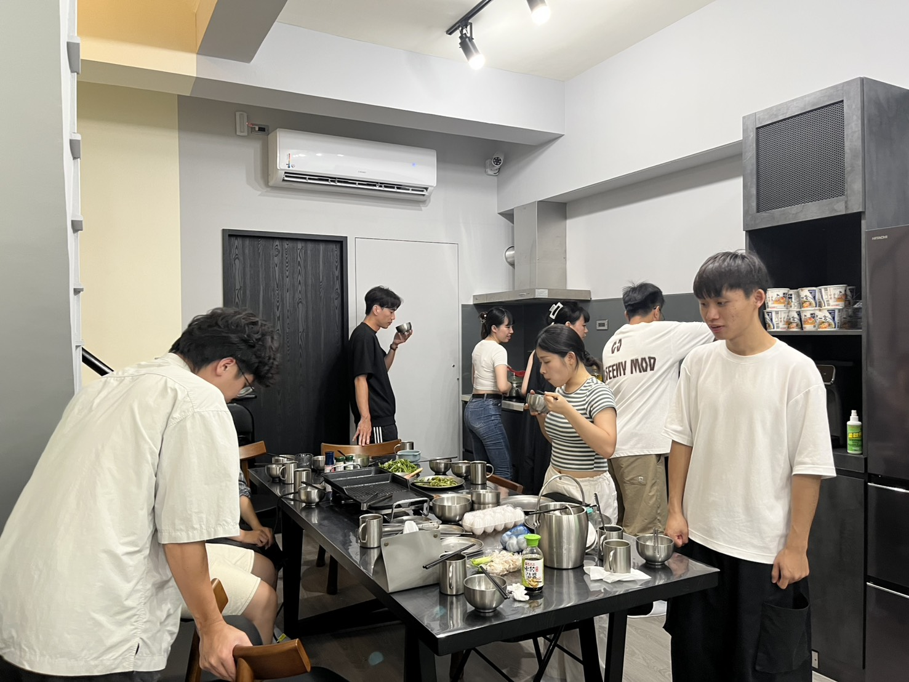
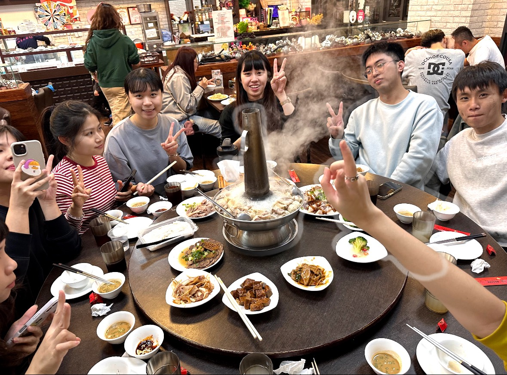
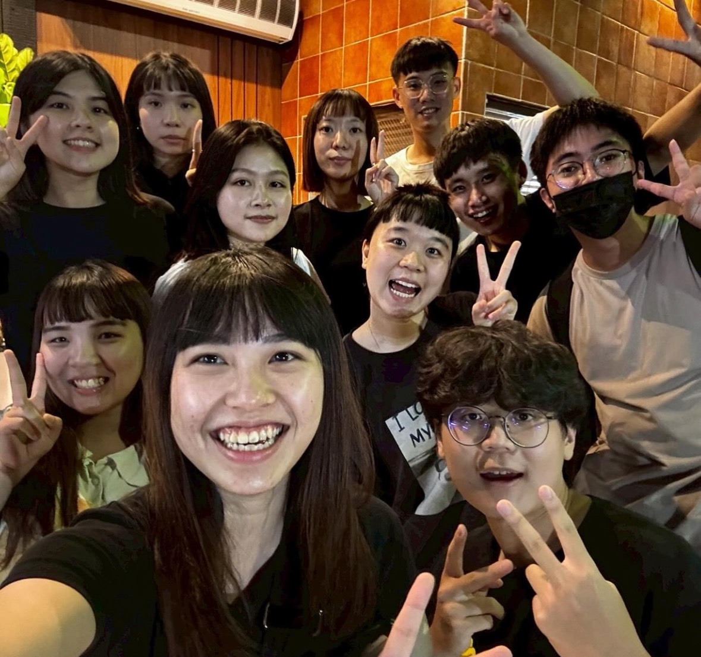
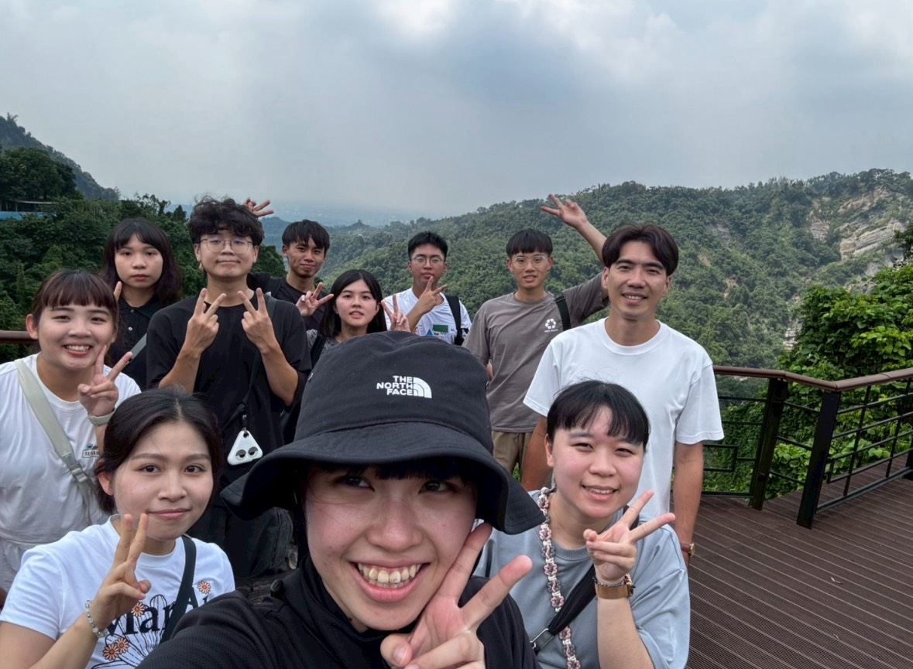
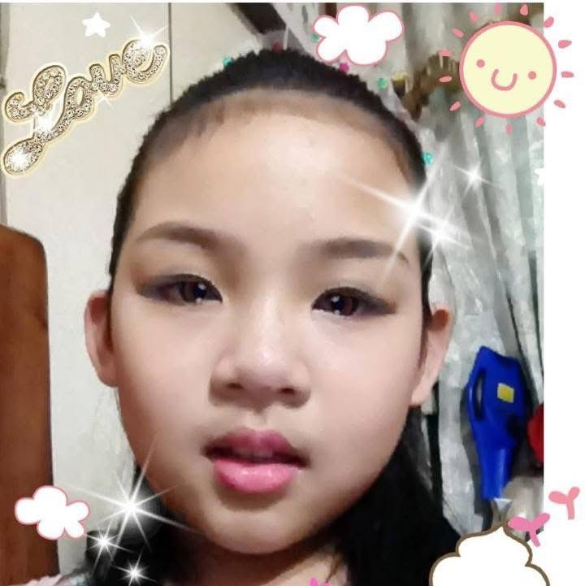
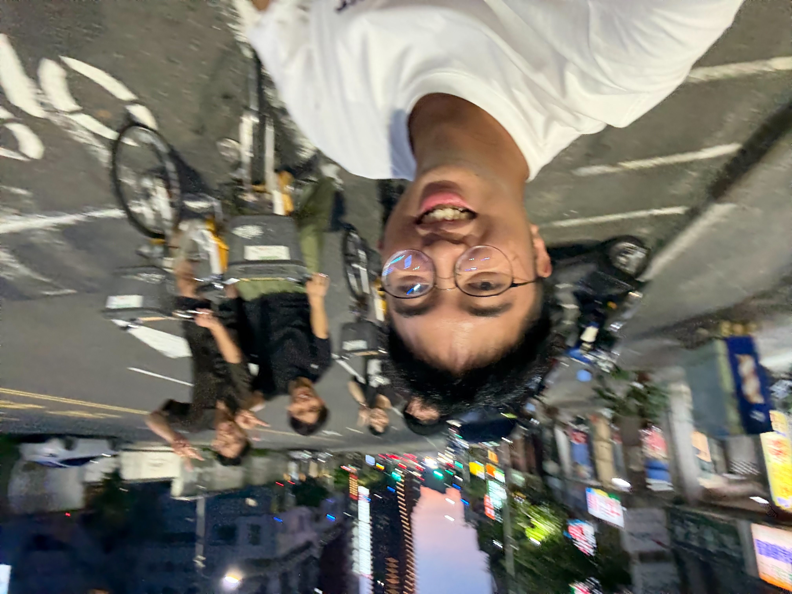

回憶中的冰山一角
-

頒獎典禮
林芷儀很少看起來這麼正常的
-

大型詐騙現場
找亮點
-

是熊 聖誕樹的出生日
阿立妳在找什麼？
-

是五星級晚餐
這張圖有好多故事
-

是好吃的酸菜白肉鍋
好想再吃一次喔
-

拍不到炭火
真的是拍不到炭火
-

快樂出行爬山日
所以說阿立，我的丹丹呢？
-

這是有顆網美心的阿立
沒什麼，只是想放一下阿立
-

這是在高雄騎腳踏車的日子
然後我那台是真的很鬆ㄟ
-

這是回憶片段中的最後一頁
雖然是在12.05拍的
1207生日快樂
琇雯生日快樂！！！
很開心能夠在你畢業前跟著學長姐一起幫你慶生
這是第一次在研究室幫你慶生，也是最後一次，所以顯得格外有意義
你非常的善良，也很天真，總是帶給我們歡笑
就連我們準備給你的生日驚喜，你每一步都完美照著我們的計畫走，讓大家忍不住一直偷笑
希望未來的你走到哪都可以被溫柔對待，繼續天真下去～
謝謝琇雯平常對我們的照顧
幫我們點餐訂餐收錢，辛苦了！
在我們的實驗室都會擔任開心果，跟你開玩笑你都會很開心
平常傻傻的樣子欺負起來都很有成就感 (筆者：????)
氣氛不好的時候也會幫忙調節實驗室的氣氛
祝妳生日快樂，未來一切順利，身體健康
謝謝最善良的琇雯
幫我解決目錄問題
還跟我說了很多格式的問題
生日快樂～希望你永遠開心 不要有煩惱 🥳🥳
🎂琇雯生日快樂🎂
可愛又貼心的琇雯❤️❤️
記得早餐就要在早上吃完，午餐就要在中午吃完！
不然以後我把妳的食物全部都吃掉，妳就準備餓扁扁XD每天都要快快樂樂呀～～～
長大了一歲就不能再耍這麼多笨了！
希望你可以搶到周深的票 然後秘書小姐可以趕快給你問卷🤩🤩
沒什麼期望妳應該變成怎樣 能夠健康快樂 就已經very good
也希望妳的家人都能健健康康
文書與行政處理大師非你莫屬
但是也不可以躲躲躲數理的部分喔
又長大一歲了，預祝順順利利畢業，無縫接軌去上班
屬於你的大日子，生日快樂，平安順心!!
那是去工工成發當工(蹭)作(吃)人(蹭)員(喝)的一天
這是一個只有鍵盤受傷的日子
甚麼妳說這張這麼模糊為甚麼還要放？
來自A姓照片供應商：這張有點糊 但品瑄笑很爽
：她也笑太爽 快仰過去了
來自A姓照片供應商：感覺隨時會躺下去
來自羅家114年度財政部長：
我頭髮太長了（？
我要去剪頭髮了
好的這天筆者人不在現場，只好看圖說故事了
恩，我看到品瑄在幫妳圍圍巾
那圍巾不會痛嗎？
這裡有太多不太懂的地方，還是打到這裡就好了
想起出去完就有好多好多事可以寫
但我累了 (誤
像是羅把拔，請問湯好喝嗎？
則麒像是在沉思著甚麼
小匡像是想好了等下玩遊戲要甚麼問題...
小妹真的辛苦了
阿瑄在做辛拉麵
好啦我不幹話了
剩下的故事相信是屬於妳自己的回憶
這間真的很好吃欸 ! 欸黑
雖然那天我發生了不太好的事情
感謝你們在物管上幫我了大忙
不瞞妳說，我真的詞窮了
但我記得那個蔥油餅是真的一級棒棒一級棒
也記得那天早上是路跑
是說阿立啊，妳的腳好點了嗎？好點了的話在底下留個言
喔對，這還是在一個明天要考線規的晚上
怎麼這樣統整起來，這天真的是發生好多事情喔
啊啊啊是很難訂位的炭火
啊啊啊啊啊想不到啊
某人：雖然那天吃完有幾個人馬上回家拉💩
但跟大家聚在一起吃飯 就很開心
雖然羅老大缺席
我這樣會不會太廢哈哈哈
這是那天本來要去國華街，說走就走的走步道
我真的想不到了有人有idea嗎.....
：大概就只有羅老拔突然想到要爬山
一群小孩就真的跟著爬山了
喔欸對，那天的餐廳真的滿好吃的!!
等等，怎麼好像都是在說吃的
如果我傳給妳的時候中間還是維持這樣，就表示沒人聽到我的求救聲
就說只是想放一下妳還點進來哈哈
咦，這樣阿立算是成功當上網美了嗎
在腳踏車上自拍到底是誰提的
我們全都需要解模糊欸黑
六合夜市真的是很好逛
便宜又大顆的生蠔
意外的還不錯喝的苦瓜汁
還有真的很難找但好吃的鱔魚意麵
阿可惜去的時候IU還沒去 哇哈哈哈
不知道妳會以什麼樣的心情看完這些
相信每張照片都有妳的回憶
雖然真的很快就要畢業了
未來不知道還有沒有機會像現在這樣都已經晚上8:52了
我還沒架完這個網站 喔我的天阿真的是快完蛋了
這次真的來不及，本來想讓大家都在這面牆上留些話
但沒關係，我們幾個還會繼續創造更多的回憶
在畢業以前，也許畢業以後
希望照片裡的妳許下的心願都會實現 (尤其是順利畢業的部分)
也希望明年的這個時候，同樣也會有這麼一群人圍繞著妳
而站在中間的妳，也同樣能如此開心快樂